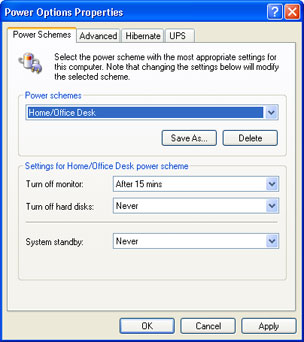
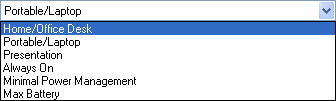
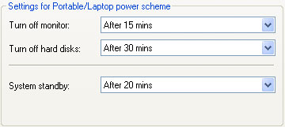
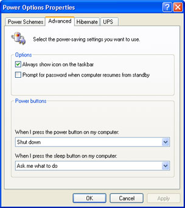

Free
computer Tutorials
|
Free
computer Tutorials
|
|
 home home |
Stay at Home and Learn | ||||
Computer Power Saving Schemes in Windows XP
This tutorial assumes that you have set the Control panel to Classic View. To see how to do this, click this link (opens in a new window): Set the Control Panel to Classic View
You can set up various power saving option in Windows XP. These are things like turn off the hard drive, go in to hibernation, turn off the monitor, and even settings for Uninterruptible Power Supply units (surge protectors). We'll take a look at the Power Options now.
Power SchemesOpen the control panel by clicking the Start button. Select Control Panel from the Start menu, and look for the Power Options item. Double click this to bring up the following screen:  You can select a built-in power scheme by choosing one from the drop down list:  When you choose an option, you'll see the settings change for the other three drop down lists. But you can change these to anything you like: If you select the laptop power scheme, the settings will be as follows:  So XP will switch your monitor off after 15 minutes of inactivity. It won't turn off your hard drive, and will go into Standby mode after 20 minutes. Again, you can set these times to any you like from the drop down lists From an energy point of view, or if you want to save a few pennies off your power bills, switching off the monitor on a Home/Office PC after a certain length of time can help. NOTE: When XP goes in to Standby mode, it will disconnect any internet connection you may have. When it comes out of Standby mode (after you move the mouse, for example), it won't reconnect you to the internet.
Power Options – AdvancedIf you click the Advanced tab, you'll see this screen:  The icon for the power options looks like this (the one on the far left): If you see that icon near your clock, you know you have power options set on your computer. You can also get XP to prompt you for your password when the computer comes out of standby. Put a tick in the box to keep prying eyes from your PC. The power buttons are on the PC itself (the off button, if you like), and on the keyboard. Not all keyboards have a "sleep" button, but setting this option can be a quick way to switch the PC off.
Power Options - HibernateThe Hibernate option only has one tick box on it. It's a bit like standby, but it stores a few settings in memory, so that it can return to the previous state it was in before hibernation. At least, that's the theory!
|
|||||
|